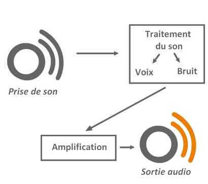

L'une de nos camarades souffre de surdité de transmission depuis l'année dernière. Elle a subi une perte d'audition quasi totale dans son oreille droite. Pour pouvoir entendre correctement et suivre les cours, elle a recours à une prothèse auditive, qui fonctionne par phémonème d'amplification, détaillé ci-dessous.
Il existe plusieurs types de surdité de transimission.
La surdité de notre camarade a &tacuteté provoquée par une infection de l'oreille interne au niveau de la peau et des glandes du conduit auditif externe, qui conduit à une obstruction complè du conduit auditif, induisant la perte d'audition.
Les autres formes de surdité ont pour origine: un bouchon de c&rumen qui peut être impossible à retirer sans intervention chirurgicale, intervation qui aura des séquelles; par un autre corps étranger perdu dans l'oreille; des malformations ou excroissances osseuses qui ankylosent progressivement l'étrier et provoquent la surdité ou par une perforation des tympans ou des sé d'otites. Toutes ces formes peuvent être par une opération chirurgicale ou par l'implant d'un appareil auditif.
Il existe plusieurs types de surdités, et la surdité de transmission n'en est qu'un seul type. Toutes ces formes ont un traitement différent, souvent lié à la technologie médicale.
La surdité de perception est l'un des types de surdité et de déficience auditive les plus communs, et elle est provoqué par: des dégâts aux cellules ciliées ou aux nerfs auditifs, une forte exposition au bruit, une blessure à la tête ou par une infection virale au niveau de l'oreille interne ou au niveau des nerfs auditifs. Elle peut même être provoquée par la prise de certains médicaments. Ce type de surdité peut être soignée par une opération chirugicale au niveau de l'oreille interne ou des nerfs concernés, ou par le port d'un appareil auditif fonctionnant grâ à l'amplification. Il n'existe pas d'autre moyen de traiter la surdité de perception de manière fiable.
Il existe également un type de surdité de perception bien précis auquel personne ne peut échapper: la presbyacousie. Celle-ci est liée à l'âge et ne peut pas être soigné.
Les autres types de surdité de perception peuvent être soignés: la surdité vasculaire, aussi appelée surdité bursque, qui se traduit pas une perte soudaine de l'audition qui peut être totale, se soigne grâce à des médicaments ou à un implant auditif; en revanche, la surdité de perception provoquée par des malformations physiques ou par des tumeurs du nerf peut être soignée uniquement par une intervention chirurgicale, alors que la surdité liée à des vestiges de maladies,
par des commotions ou chocs violents, par des traumatismes sonores, ou par des destructions toxiques provoquées par des produits toxiques, peut être soignée uniquement par l'implant d'un appareil auditif.
Les acouphènes sont un autre type de déficience auditive: ils correspondent à la perception de sons même en absence de stimulation sonore extérieure. Il en existe deux types, les acouphènes objectifs et les acouphènes subjectifs, qui correspondent respectivement à une perception auditive anormale d'un bruit réel et à une sensation ressentie en l'absence de tout son. Seuls ces derniers peuvent être soignés, grâce à des masqueurs auditifs qui créent une fréquence voisine à la fréquence parasite, qui l'annule et permet d'entendre normalement.